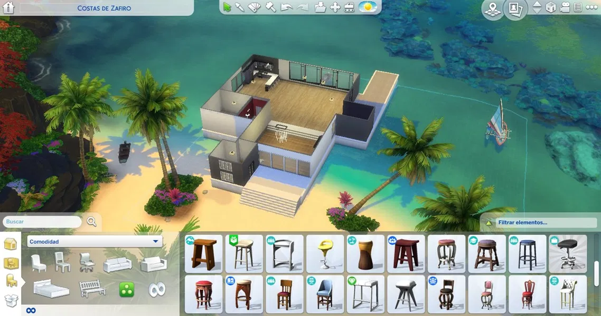
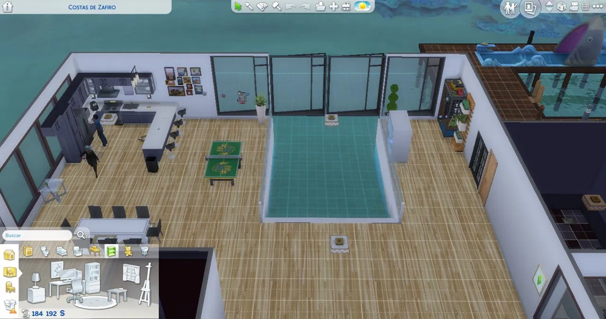
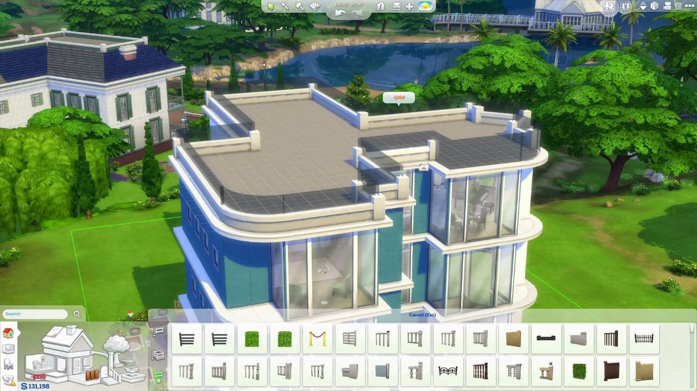

¿Qué es el Modo Construir?
El Modo Construir en Los Sims 4 permite diseñar y decorar casas, terrenos y habitaciones sin controlar directamente a los Sims. Es la herramienta ideal para dejar volar la creatividad y crear hogares únicos.
El Modo Construir es una de las características más destacadas de Los Sims 4, permitiendo a los jugadores crear y personalizar sus propias casas y lotes. Desde la elección de los cimientos hasta los últimos detalles en la decoración, este modo ofrece una gran variedad de herramientas y opciones.
Características Principales

- Herramientas de Edición: Modifica paredes, techos y suelos fácilmente.
- Modo de Diseño: Utiliza la función de arrastrar y soltar para colocar objetos.
- Estilos de Decoración: Accede a una amplia gama de muebles, electrodomésticos y decoraciones.
- Plantillas: Usa plantillas predefinidas para crear casas rápidamente.
Herramientas principales del Modo Construir
Estas son las herramientas que aparecen con más frecuencia y sus usos básicos:
- Bloques: construir muros y dividir espacios.
- Pisos y techos: elegir materiales y alturas.
- Objetos (comprar): colocar muebles y decoraciones.
- Modos de movimiento: mover, rotar y alinear objetos.
- Herramienta de terreno: elevar o bajar el terreno (según packs y permisos).
Consejos para Construir
Para sacar el máximo provecho del Modo Construir, considera estos consejos:
- Planifica el diseño de tu casa antes de empezar a construir.
- Experimenta con diferentes estilos y colores.
- Usa la vista en 3D para tener una mejor perspectiva de tu creación.
- Guarda tus diseños en la galería para compartirlos con otros jugadores.
Tabla rápida: ejemplos de elementos y su uso
| Elemento | Tipo | Precio aprox. / DLC | Uso principal |
|---|---|---|---|
| Bloques de pared | Herramienta | Incluido | Crear habitaciones y dividir espacios |
| Suelo de madera | Material | Incluido / packs decorativos | Dar aspecto cálido y clásico |
| Ventanas panorámicas | Objeto | Depende del pack | Mejorar iluminación y vistas |
| Jacuzzi | Objeto (exterior) | Pack de accesorios | Área de relax exterior |
| Escaleras modernas | Objeto/Construcción | Incluido / packs | Conectar plantas y mejorar diseño |
Consejos y buenas prácticas
- Planifica el espacio antes de colocar muebles — usa la herramienta de cuadrícula si está disponible.
- Combina tamaños y alturas para dar dinamismo.
- Revisa la accesibilidad: los Sims necesitan espacio para moverse alrededor de los objetos.
- Guarda versiones periódicas del lote para probar cambios sin perder el trabajo anterior.
Mini-ejemplo: pasos para diseñar una sala
1. Dibuja el contorno con bloques.
2. Añade suelos y techo.
3. Coloca ventanas para que entre luz.
4. Selecciona una paleta de colores (pared, suelo, mobiliario).
5. Muebles grandes (sofá, mesa) y después los accesorios (alfombras, lámparas).